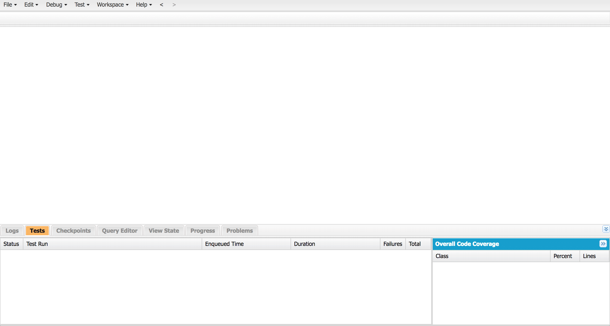

In addition to standard components that Salesforce provides and those you can download from the AppExchange, you can create custom components in the Developer Console
Just open it up and your team can build anything you need - like a backlog manager for Product Managers.
Email sending isn’t limited to a single list. You can select multiple lists to send your emails to, as shown here. You also have the option to remove lists in Pardot by clicking “x.”
Pardot gives you the ability to segment your database into targeted lists that can be used to send highly personalized emails.
Segment your email recipients based on job title, industry, geography, and a number of other criteria.